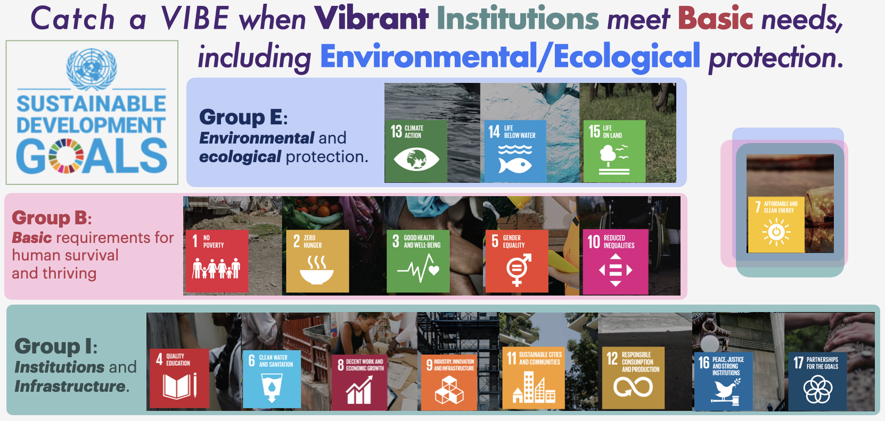
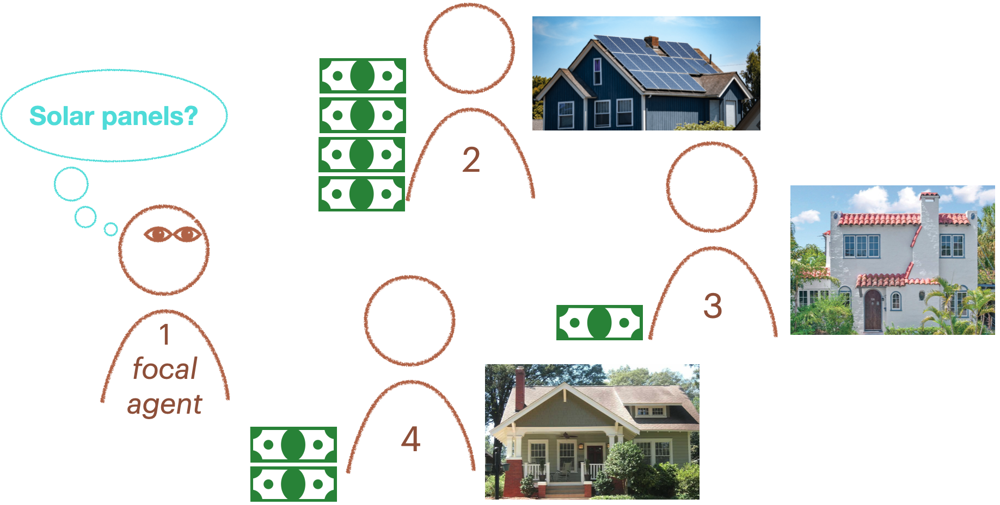
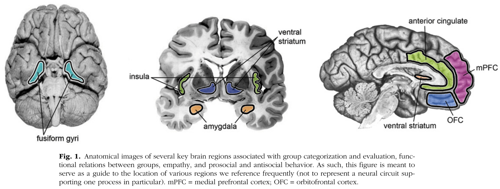
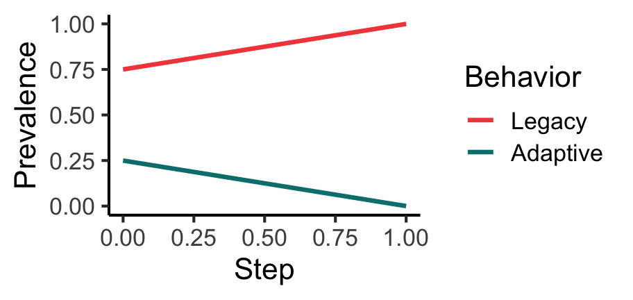
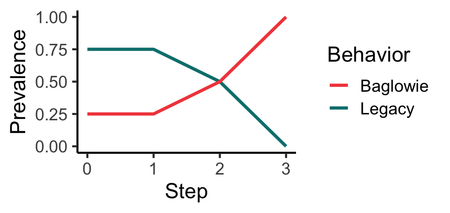

Indigenous, local peoples of the South Pacific Islands and other coastal habitats have sustainably managed mangrove forests to dissipate storm surges and prevent erosion, mitigating potential costs of climate change since long before the anthropocene (Alongi 2002; Nalau et al. 2018; Pearson, McNamara, and Nunn 2020; McNamara et al. 2020). First peoples of western North America have similarly practiced prescribed burns to prevent destructive wildfires during times of drought for millennia (Eisenberg et al. 2019; Kolden 2019). Despite their long-known effectiveness, adaptive practices like these often fail to spread widely. Instead, international development agencies frequently advocate for the construction of seawalls, for example, even though seawalls can exacerbate flooding once breached and incur high maintenance costs (Piggott-McKellar et al. 2020). Inland forest management is beset by polarization among stakeholders (Swette, Huntsinger, and Lambin 2023), resulting in devastating wildfires burning a buildup of fuels or greenhouse gas-intensive clearcuts.
Here we introduce what we dub the puzzle of diffusion: why do some effective, sustainable practices like mangrove forest management fail to diffuse broadly, while other less effective or even maladaptive practices become widespread (Figure 1.1)? To answer this, we answer some more basic questions along the way. First, how do people decide what to do, i.e., how does learning work? Second, what is the effect of identity on how well or how likely we are to learn from people of the same or different identity? Third, what is the effect of social structure, i.e., who knows whom, represented as a social network? Agent-based models are useful because they provide a framework for creating rigorous, mechanistic, concrete models of social diffusion of adaptations. They help us deal with the complexity of causation in the real world through strategic selection of causal input variables and model details, which, over several model time steps, lead to social emergent phenomena like the diffusion of climate change adaptations.
Figure 1.1: Agent-based models can help us answer the puzzle of diffusion, i.e., why do certain adaptations widely diffuse socially and some do not, with maladaptations often taking their place?
The focus of this course is developing agent-based models that can help us simplify complex combinations of cognitive and social factors to represent only the most relevant ones, and observe the effect of these on simulated outcomes such as the proportion of people adopting adaptive behaviors, or opinion extremism and polarization.
1.1 Sustainability as Social Science’s (Ethical) “Manhattan Project”
The agent-based modeling approach developed in this course provides a structured way to test the effectiveness of social interventions aimed at promoting sustainable behavior. An intervention is some structured introduction of a sustainable practice through education or other means with the intention of sparking the endogenous diffusion of the practice after direct instruction has ended. For example, Airoldi and Christakis (2024) developed a public health intervention to improve health outcomes for residents of villages in rural Ecuador far from hospitals. Airoldi and Christakis educated residents over an extended period of time about hand washing and warning signs of pregnancy complications, then surveyed residents to see if those not involved in the initial intervention had learned the information from the intervention. Airoldi and Christakis’s study was designed to test a hypothesis about whether the friendship-nomination strategy for forming the seed set of individuals selected for direct instruction from the intervention.
By formalizing and testing our assumptions about social dynamics, agent-based modeling supports better design and evaluation of policies and programs aimed at driving real-world change. This deductive, experimental approach allows us to explore how cooperation, coordination, identity, homophily, and influence affect the likelihood that beneficial behaviors will spread. In the coming chapters and associated problem sets we will analyze social learning of behaviors and social influence of opinions in various contexts. This could save serious resources. We could use computational models to test the hypothesis from Airoldi and Christakis (2024) that friendship nominated seed sets indeed better sparked endogenous diffusion in many different social networks with different group structures, which would give us a more comprehensive understanding of when friendship nomination does well or not.
The goal is to build up a repertoire of agent-based modeling techniques for incorporating different assumptions about how social learning or influence work, whether group structure is important to these processes, and for modeling social network structure. This repertoire can then be applied to sustainability contexts of interest to understand how different sustainability intervention strategies, such as who should learn about sustainable adaptations first in an educational intervention or how best to assist stakeholder deliberations to reduce opinion polarization that can derail collective adaptation. To choose model components wisely requires an understanding of elements of sustainability, cognitive and social science, network science, and software engineering.
The UN Sustainable Development Goals help us focus and organize our work by providing concrete goals for evaluating progress towards sustainable development for all Figure 1.2. These goals include targets for institutional development that promotes basic conditions for human thriving (justice, equality, education, public health, and no poverty) so as to assemble and enable a critical mass of people to participate bringing about sustainable development. People cannot participate in sustainability if they suffer in poverty, from illness, or subjugation by authoritarians–all but the most zealous environmental defenders will fight on when these basic needs are unmet. Since progress has been slower than necessary.
Sustainability, then, has several different dimensions, all of which contribute to climate action and environmental protection. I have organized these goals into the VIBE system to guide sustainability promotion where Vibrant Institutions meet the Basic needs, including Environmental and Ecological protection. The 17 goals and how they each help catch a VIBE are illustrated in Figure 1.2.
Organizing and connecting our work to has two benefits. First, it helps us identify which cognitive and social factors are at work in different sustainability foci. Second, it expands the corpus of existing research on which we draw to consolidate our social and cognitive theories of behavior change that we will apply to sustainability interventions. While many of us in computational social science know our work is important as basic science partly because we are confident it can apply to real-world problems, it is not clear how. Part of this problem seems to stem from the lack of a clear goal for this science beyond evaluating alternative theories of social behavior.
Sustainability serves as a sort of never-ending Manhattan Project for social scientists, an ethically praiseworthy pursuit that will provide a selection pressure on social science frameworks or theories that theory-comparison goals cannot: our social science frameworks, theories, and models should be maximally useful to the long-term study of sustainability. That means simulations should be designed so the model parameters and outcome measures are observable and could reasonably be measured in the real-world. It means flexibly adopting different assumptions in different cases, possibly sampling from different theories that, in a different context, might make contrary predictions. In the next

Figure 1.2: The VIBE system helps us identify how sustainability priorities can motivate new social science studies.
1.2 Computational social science (for sustainability)
Social science is immensely broad and complex comprised of numerous traditional academic disciplines in their entirety, such as anthropology and sociology, with contributions from several other traditional disciplines, including cognitive science, engineering, and physics. We use the problem of promoting sustainable practices via interventions to structure this work. Sustainability interventions are eductaion campaigns to induce the diffusion of certain adaptive, sustainable behaviors, such as in public health (Airoldi and Christakis 2024), microfinance to support gender equality at work, home, and everywhere (O’Connor and Weatherall 2018; Clydesdale2023?), and climate change adaptation via ecosystem protection (Brooks et al. 2018; McNamara et al. 2020). Following the UN SDGs, we see that this is quite a broad range of potential behaviors, which is actually a good thing. It means that our conclusions could apply to a broad range of application domains.
On reflection, social science for sustainability needs a science of how adaptive, sustainable behaviors, opinions, and other socially-transmitted items diffuse from person to person, throughout a population, over time. I don’t know for sure, but it seems like this may be the fundamental problem in social science, broadly understood. The puzzle of adaptation frames the overarching question of designing interventions: how best to jump-start a self-sustaining process diffusing adaptive sustainable behaviors?
Computational social science is the use of mathematics and computers to understand and model the mechanisms underlying social diffusion phenomena, such as the adoption of sustainable practices or rising political extremism, and statistically analyze collective behavior data. We start here and for the first chapters of the book developing formal and generative models of promoting widespread behavior change. When we come to opinion change, we arrive at a natural transition point where theory necessarily meets practice to understand how to properly measure opinion change in the real world, which requires statistical inference since opinions are not directly measurable. We apply our techniques to show that
Computational social science is a cognitive gadget to help us use social science theory for reasoning about the effect of different cognitive capacities (e.g., adaptive social learning), social processes (e.g., rising extremism), and social and natural environment constraints (e.g., social networks, wildfire risk). Too often in the history of social science, social science theory is not presented mathematically, with squishy verbal explanations of theories and their consequences instead of concrete, rigorous mathematical or computational statements, where rigorous means they are theoretically true under a set of explicitly-specified assumptions. This means that mechanisms have tended to be only vaguely specified, and changes in assumptions cannot be quantitatively, let alone systematically, explored (Turner and Smaldino 2022).
1.3 Social diffusion of sustainable practices
Here we sketch a general theoretical framework that avoids the gridlock of deciding which social science theory is best by starting at one level of abstraction higher than we typically use for social science. The level we start at here sits above theories like complex contagion of behaviors, cultural evolution, or opinion dynamics models of opinion change, which can be taken as occupying a more implementation level of abstraction. Here we begin by examining the most general features of social interaction and behavior diffusion, filling out details with assumptions drawn from the more implementation-level social science theories.
In these models we assume there are two possible behaviors, or classes of behaviors, that individuals can do. These are called the Adaptive behavior or practice, or behavior \(A\) for short. The non-adaptive or maladaptive behavior is the Legacy behavior, i.e., the business-as-usual behavior. An individual who does the adaptive behavior is an \(A\)-doer, and one doing the legacy behavior is an \(L\)-doer.
To represent interventions, we initialize agent populations with one behavior or the other, specify environmental or ecological conditions such as the apparent benefit of different behaviors, and set agent learning strategies. Learning strategies that we consider are contagion (probabilistic adoption on exposure), success-biased learning (successful individuals are more likely to be chosen as teachers), and conformity or frequency-biased learning (more prevalent behaviors are more likely to be adopted).
The model represents time in steps. On each time step, agents select partners, interact, and update behaviors based on outcomes and learning rules. These steps are repeated until specific conditions or thresholds are met. Stopping conditions are typically specified as when a maximum time step is reached, when the entire population fixates (i.e., all do the same) on one behavior or the other. After the model stops, the dynamics can be inspected or the outcomes can be aggregated across simulations in the case of agent-based modeling.
In the next chapter I explain how to develop various formal models of behavior diffusion that represent changes in prevalence of different behaviors.
1.3.2 Agent-based models of diffusion
Agent-based models (ABMs) provide a structured way to explore complex systems by simulating interactions between autonomous agents, i.e., simulated people. In sustainability contexts, ABMs offer a low-cost testbed for understanding how interventions might impact social dynamics and environmental outcomes. For example, Airoldi and Christakis (2024) demonstrated through regression analysis across that one method for selecting individuals targeted in a public health education campaign worked better than another. They studied over 20,000 individuals across Honduran villages of about 100 people each to reach their findings. Real-world verification of the efficacy of different intervention strategies is important. However, we can also use agent-based models to represent the diffusion of information in simulated populations where interactions are structured by model social networks. We can initialize thousands or millions of simulated villages in which this information could diffuse with different intervention strategies, and observe the distribution of the adoption of sustainable behaviors for each potential intervention strategy. We can then analyze which performed best in silico, which can be helpful if interventions will be taken to different contexts. In other worlds, we can use ABMs to deduce how different learning rules, group identities, and social structures shape sustainability outcomes generally, which can guide our selection of real-world intervention strategies.
We will analyze and draw on several real-world empirical studies of interventions to develop our agent-based models that we in turn will use to simulate interventions in order to deduce which strategies are most effective for social interventions to promote sustainability, and why. A social intervention (or just intervention) for promoting sustainability is any concerted effort where those promoting a sustainable practice introduces information about how to perform that practice to a population. Deductive methods complement regression-based inferential or inductive strategies. Deductive strategies can explain which strategies are most effective and why in idealized, cost-free settings (cost-free at least compared to the cost of real-world social interventions at scale).
Low-cost experimentation with simulated social interventions to promote sustainability are critical. Unless progress is accelerated towards we can expect to “have 575 million people living in extreme poverty, 600 million people facing hunger, and 84 million children and young people out of school. Humanity will overshoot the Paris climate agreement’s 1.5°C ‘safe’ guardrail on…temperature rise. And, at the current rate, it will take 300 years to attain gender equality” (Malekpour et al. 2023, 250). Accelerated transformations are required to reach goals necessary to avoid increasingly frequent and costly climate change disasters (United Nations 2023). It is not plausible to do real-world experiments at the global scale required to infer which strategies work best in which situations.
In this course we will focus on deducing how between different cognitive and social factors, or other initial conditions, affect simulated sustainability intervention outcomes. We will frame our studies in terms of sustainable development goals, but we will never fit our models to observations. Nonetheless, we will strive to develop models that are amenable to real-world interventions against which the models could be fit and predictions could be compared. It seems this is not done too much in practice yet in sustainability. However, some of our colleagues focused on studying basic processes that underlie cultural transmission do exactly this to explain experimental data and archaeological observations (Deffner et al. 2024), which thereby improves their theory, models, and understanding of cultural evolution in a theory-model-observation cycle. With more time and research effort, this cycle may become commonplace in sustainability.
The urgent need to understand how sustainable behaviors spread in order to develop effective interventions pressures social scientists to make social science more rigorous, reliable, and digestible by non-social scientists. In the rest of this Introduction we review cognitive and social theories of social learning, identity and influence, homophily and core-periphery network structures, and preview the remainder of the course material. For an overview of the course feel free to skip ahead to the Plan in table format.
1.4 Social learning strategies
Human kind is set apart by powerful learning and reasoning capabilities (Witt et al. 2024) that enable cultural transmission and accumulation of technologies and practices no other species matches (Henrich 2015). For our sustainability models, we only need simple models of cognition and learning. It would never be practical to do psychological or cognitive tests in the context of sustainability interventions that targets large populations, for one thing, so we could never compare detailed cognitive assumptions or predictions with reality. For our purposes we will consider three general classes of learning strategy:
Success-biased learning: Individuals are more likely to adopt behaviors perceived to be successful or beneficial.
Frequency-biased learning: Individuals adopt behaviors because others are already doing them, creating a conformity effect.
Contagion: Individuals copy behaviors simply by observing others performing them.
In the mangrove versus seawall example, success-biased learning might favor seawalls if influential external actors, who seem successful or wealthy, advocate for them, even if seawalls are ultimately less effective. Mangrove forests might become widely adopted if, on the other hand, frequency-biased learning predominates and many communities have adopted that method.
1.4.1 Social learning models with example
To make this more concrete, we formalize (i.e., give formulas for) these three learning strategies as follows using the example in Figure 1.4. In the example, there is one focal agent who is the one doing the observing/learning, labelled with the ID 1, and three social network neighbors with IDs 2, 3, and 4. The focal agent is deciding whether or not to install residential solar. One of his neighbors has installed it, 2. Based on 1’s perception, 2 is the wealthiest, represented by four dollar symbols. 3 is perceived to have one dollar and 4 has two dollars.

Figure 1.4: Agent 1, the focal agent, is considering whether to install residential solar. The probability agent 1 installs residential solar depends on its social learning strategy.
Success-biased learning
In success-biased learning, learners first choose an interaction partner/teacher randomly weighted by observed fitness of their neighbors, which is a generic term for wealth, power, status, etc. In general for this case, the probability that learner \(i\) chooses teacher \(j\) is
The probability that \(i\) adopts \(A\) is then the sum of the probabilities of choosing each neighbor performing \(A\) (contained in the set \(m_i\)),
In our example, only one neighbor installed residential solar with a fitness (i.e. wealth in this example) of 4, while the others have finess 1 and 2. Therefore, \(\Pr(1 \text{ adopts } A) = \frac{4}{7}\).
Frequency-biased learning
In frequency-biased learning there is no interaction partner or teacher chosen. The probability of adoption is only given by the relative frequency of each behavior. The general expression is
\[
\Pr(i \text{ adopts } A) = \frac{|m_i|}{|n_i|}.
\]
In our example, then, the probability of installing residential solar under frequency-biased learning is \(\frac{1}{3}\).
Contagion learning
In the contagion learning model, the focal agent’s (i.e., the learner’s) teacher (i.e., interaction partner) is chosen at random. Then, the learner adopts the teacher’s behavior with probability \(\alpha\), the adoption rate. In this case, then, the probability that 1 adopts residential solar is
More generally, for focal agent \(i\) with the set of neighbors \(n_i\) (\(n_1 = \{2, 3, 4\}\) in the example), where \(m_i\) is the set of neighbors who have adopted the adaptive behavior (\(m_i = \{2\}\) in the example). We call the adaptive behavior \(A\). The general probability of adoption in contagion learning is therefore
\[
\Pr(i \text{ adopts } A) = \frac{\alpha |m_i|}{|n_i|},
\]
where the \(| \cdot |\) operator counts the number of elements in a set.
Combinations of learning models
There is no reason different learning models cannot be combined. The software we will use in this class, socmod, provides flexibility to the user to define their own learning models. The simplest combination of the three learning models above is to add an adoption rate to either frequency- or success-biased learning. In this approach, one could call the behavior selected by the models above could be considered prospective or candidate behavior to learn, then is actually learned with probability \(\alpha\).
For another potentially useful modification, \(\alpha\) could be defined at the individual level, say \(\alpha_i\), or for dyads (i.e., a pair of interacting individuals) , \(\alpha_{ij}\), where \(i\) is still the focal agent learner, but we have added \(j\), representing the selected teacher.
1.5 Identity and Influence
Group identity critically influences social learning. Neuroscience research demonstrates that our brains distinctly respond to individuals identified as part of our group (Cikara and Van Bavel 2014), as revealed through fMRI neural imaging (Figure 1.5). This ability likely evolved because when humans first emerged about two million years ago, it was much more important for survival to be able to rapidly identify whether someone was a friend or foe based on group markers. Although group membership can affect how we respond to information learned from others, group membership itself is quite plastic, meaning who belongs to which group can be rapidly reconfigured. For example, neural signals of race-based group perception was observed to be suppressed and overridden when individuals were in mixed-race groups created by experimenters that competed against other mixed-race groups in an psychological experimental task (Van Bavel, Packer, and Cunningham 2008).

Figure 1.5: Figure 1 reorganized with original caption from Cikara and Van Bavel (2014)
Studies further show that group identity can strongly influence behavioral choices. For instance, experimental evidence reveals people resist adopting beneficial behaviors if associated with opposing political identities (Ehret et al. 2022), emphasizing how identity can create substantial barriers to sustainability. This general effect of group membership interfering with learning is called outgroup aversion(Smaldino et al. 2017).
1.5.1 Social networks, homophily, and core-periphery structure
Social structure can significantly impact behavioral diffusion, especially in core-periphery configurations. Core-periphery networks emerge as a response to risk and uncertainty, e.g., in food sharing networks (Ready and Power 2018), so they are hypothesized to also be important in climate change adaptation transmission networks (Jones, Ready, and Pisor 2021). Core-periphery networks can be created by setting appropriate group sizes and homophily levels in homophily network models (Turner et al. 2023) or specifying certain connectivity probabilities to the stochastic block matrix algorithm for creating structured random graphs (Rombach et al. 2014; Milzman and Moser 2023). Homophily is the measure of how much more likely an individual is to socially connect within their own group versus with a member of a different group. Homophily can range from -1 to +1, where -1 represents no within-group connections and only between-group connections (i.e., anti-homophily); 0 represents an equal probability of within- and between-group connections, and +1 represents only within-group connections. We will define homophily as either a global or group-level variable, though homophily could vary individually as well. There are two types of homophily:
Choice Homophily: Individuals actively prefer interacting with similar others.
Induced Homophily: Social interactions limited by historical or external conditions like geography, profession, birthplace, etc.
These structural elements can significantly limit the diffusion of sustainable practices from peripheries, like the mangrove management on smaller islands, to central cores. However, as colleagues and I have showed, this core-periphery structure, defined by moderately high majority-group homophily can actually promote the diffusion of adaptations, provided the adaptation is practiced by the minority group (Turner et al. 2023), as is the case for mangrove forest management or prescribed burns.
Due to time restrictions we will not be able to analyze the effects of social networks in this tutorial.
1.6 Computational techniques for agent-based modeling
This section introduces agent-based modeling in socmod starting with basic functional and object-oriented programming in R. It therefore builds on an assumed knowledge of R basics which can be gained by studying, for example, Hands-On Programming with R or other basic R tutorial introductions.
To model social behavior it helps to have intuitive software tools grounded in an empirically-motivated, self-consistent scientific theory. socmod provides those tools, but to put it to best use it’s helpful to know how it works, especially for people used to using R in a data science context. Many of the same tools are transferable, especially declarative/functional programming, as is used and encouraged by the tidy approach in R for Data Science.
To create simulations that generate social behavior we have to go beyond tabular representations of the world to more complex representations of people and their interactions that can be measured. These measurements are recorded in a standard tabular format, e.g., CSV, which can then be analyzed using tidy/R for Data Science strategies.
In agent-based modeling, we create software representations of simulated people, i.e. agents, or other interacting entities, including the agents’ environment. Object-oriented programming is the natural choice for software design in this case because it provides a structure for defining custom objects like socially interacting agents. An object is one bit of data that could be a number or character type, but could also be something more complicated. In object-oriented programming we define custom classes that specify various data fields and function methods for maintaining and modifying the state of objects. The fields and methods of a class therefore are sets of related data and functions to represent things in the world.
To summarize, objects are a way to track and modify the state of different software entities. We can create simulations of real-world systems by defining custom object types called classes whose state and behaviors are modeled on relevant real-world features and behaviors.
In socmod, we define custom R objects for agent-based models of social behavior using the R6Class method that creates a new object type, i.e., a new class. We use tidy-style functional programming where helpful to represent model features and dynamics.
In the remainder of this chapter, I will first review variable assignment and data structures in R including vectors, lists, data.frames, and tibbles. We then review relevant topics in functional programming, then demonstrate how to create custom classes in R with the library R6. This tutorial then closes with a demonstration of a simple four-agent agent-based model of social behavior, kept simple to highlight the functional and object-oriented design patterns in socmod, representing Agent, an AgentBasedModel, and Trialclasses defined using the R6Class function.
1.6.1 Data collection types in R
In R, there is a hierarchy of data collection types that are necessary to know about for functional programming, which often involves applying a function across every element of a collection of data. Data collections include vectors, lists, data.frames, and tibbles, which we’ll cover here.
Collections of basic data types
In computer science, a collection is an abstract data type that organizes and stores instances of other data types. In R, the most basic data types are numbers (e.g., double or integer) and text, whose data type is character in R whether it’s a single character or several:
print(typeof('c'))
[1] "character"
print(typeof("social science is kewl"))
[1] "character"
Vectors
R vectors are defined using the c() function, e.g., vec <- c(0, 0, 1). The data type of all vector elements must be the same. This is enforced by R coercing data to different types, for example:
print(c(0, 0, 1))
[1] 0 0 1
print(c(0, 0, "yo"))
[1] "0" "0" "yo"
We index vectors using single square brackets, with R indexing starting from 1:
vec <-c(1, 2, 3, 4, 5) # equiv to vec <- 1:5 or seq(1, 5)print(vec[1])
[1] 1
print(vec[length(vec)])
[1] 5
Lists
If one wants to keep elements of different types in a single collection, use the R list:
l <-list(0, 542, "yo")print(l)
[[1]]
[1] 0
[[2]]
[1] 542
[[3]]
[1] "yo"
Note the visual representation has changed on printout. We now need to use double-square brackets to index list elements themselves:
print(l[[3]])
[1] "yo"
If we leave off one of the square brackets we effectively get a sub-list with just one element:
print(l[3])
[[1]]
[1] "yo"
This is useful if you want to create a new sub-list with more than one element:
print(l[c(2, 3)])
[[1]]
[1] 542
[[2]]
[1] "yo"
Named lists
Named lists are the primary key-value store in R, just like dict in Python. It allows us to label entries of the list and access them using double square brackets with the character name or using the $ access operator:
Both the tibble and data.frame classes represent tabular data, meaning data that can be represented in table format, e.g., in comma- or tab-separated value format. There are some subtle differences listed below, but we’ll use tibble for representing our tables.
Tibbles are like fancy lists that have special properties that make data manipulation more efficient. The details of how this works aren’t super important at this point. The important thing to know is how one can initialize tibbles and access tibble columns similarly to lists, as shown in the following example:
tbl <- tibble::tibble(a =c(0, 5, 6), b =c(7, 8, 9))print(tbl$a)
[1] 0 5 6
print(tbl[["b"]])
[1] 7 8 9
Using tibbles ensures that data manipulation and analysis using the tidyverse will work as expected. For example, the tidyverse provides functions for analyzing different groups of data within a larger dataset. This is a common data analysis pattern called split-apply-combine, which in the tidyverse translates to group-by and summarise when using the dplyr library. For example, we can calculate the mean of measurements in “experimental” and “control” conditions in some fake data:
# A tibble: 2 × 2
condition mean_measurement
<chr> <dbl>
1 control 4.4
2 experimental 14.0
Difference between data.frame and tibble
The tibble library provides a table data representation (also called tibble) that is a bit more flexible and intuitive than the R built-in data.frame. One reason I prefer tibbles is because traditional data.frames automatically convert strings to factors unless you tell them not to. Tibbles don’t, so you’re never surprised.
Column naming is also more flexible with tibbles. A data.frame requires syntactically valid R names, while tibbles can handle column names that include spaces or even non-standard characters. I often use this feature to use column names like Mean adaptation success that print nicely when used as labels in ggplot.
Finally, tibble operations always return a tibble. For example, if df were a data.frame, the operation df[, 1] would return a vector by default. If it were a tibble it would return another tibble, making behavior more predictable in data analysis pipelines.
1.6.2 Functional programming
Functional programming is especially useful for writing code that applies the same function to several inputs, but wants to leave it up to the user to specify exactly which function should be applied. In socmod we pass functions as arguments to other functions to specify how agents pick their interaction partners (i.e., teachers in a learning context) and how social learning works. Here are some simple examples demonstrating the key concepts and techniques of functional programming that could help with socmod programming.
Higher-order functions: functions with function arguments
In R, and other programming languages supporting the functional style, one can treat functions like any other data and pass it as an argument to other functions. A function that accepts a function as an argument is called a higher-order function. Here is a simple example of a higher order function that takes some data as a first argument and applies the function f to that data twice, putting the result of each calculation in a two-element vector.
Below we call this higher order function by providing data=2 as the first argument and an anonymous function as the second argument, which can be written using \(arg) { ...function body... } syntax:
# \(x) {...} is equivalent to function(x) { ... }; these are # anonymous functions.# Expecting to return c(4, 4)repeat_2_higher_order_func(data =2, f = \(x) { return (x *2) })
[1] 4 4
The above is the representation of a vector printed to screen, so we see that our expectations were matched.
c(4, 4)
[1] 4 4
map: a common, useful higher-order function used often in socmod
One of the most useful and common higher-order functions is the map function. This function maps a function, denoted .f below, onto every element in a collection, denoted .x. This notation is from the map family of functions in the purrr library for tidy functional programming.
library(purrr)
Here is an example of mapping an anonymous function that multiplies its input by 3 onto a vector with entries 2 and 8:
# Now get we use map_vec that applies .f to every element of .x,# expecting the following to return a vector with elements 3*2 # and 3*8, i.e., c(6, 24).purrr::map_vec(.x =c(2, 8), .f = \(x) { return(3* x)})
[1] 6 24
If we want to apply a function that takes two variables, the value and index of an element in a collection, we can use the imap family of functions as follows to return a vector that contains the original element multiplied by its place in the input vector:
Classes are ways to encapsulate diverse distinct, but related, processes, behaviors, data, attributes, and other types of information in a single object, i.e., a software representation of an instance of that entity. R6 is a library for creating our own custom classes that serve as an abstract template that specifies what distinguishes different types of objects/entities. Below we show first how to create a new agent, i.e., a new instance of the Agent class that is provided by socmod. After that is a fun example of how we can design a different social behavioral model, one of football/soccer matches. We write classes for players and teams and develop a play_match(team1, team2) function that pits two teams against each other.
The Agent class in socmod
Below we create a new instance of the Agent class using the class constructor, the function written socmod::Agent$new() below that creates a new instance of the class.
a1 <- socmod::Agent$new(1, name ="Matt", behavior ="Adaptive", fitness=1e6)
We can use the access operator, $ in R, to access the fields (i.e., attributes) of agent a1 like so:
print(a1$get_fitness())
[1] 1e+06
print(a1$get_name())
[1] "Matt"
print(a1$get_id())
[1] 1
print(a1$get_behavior())
[1] "Adaptive"
We can also use purrr::map functions over neighbors like so:
# Assign neighbors to a1.a1$set_neighbors(c( socmod::Agent$new(id =2, name ="n2"), socmod::Agent$new(id =3, name ="n3")))# Get the list of neighbors back to check it worked.neighbors <- a1$get_neighbors()print(class(neighbors)) # should be [1] "Neighbors" "R6"
[1] "Neighbors" "R6"
# Neighbors$map() returns a list...neighbor_names <- neighbors$map(\(n) n$get_name())print(neighbor_names)
[[1]]
[1] "n2"
[[2]]
[1] "n3"
# ...use `unlist` to convert it to a vector:print(unlist(neighbor_names))
[1] "n2" "n3"
Exercise: design and define classes from scratch
In class we started creating our model of a soccer player agent called Footballer, defined below. We ran out of time at the end of class to write methods for Footballer, i.e., ways that a football player could interact with the world, or that the world could act upon a soccer player. However we only had time to create a stub for two methods. A stub is a minimal chunk of code that does very little to nothing, but doesn’t get in the way by causing errors or anything like that. It enables us to document our plans for future development in the exact place where it would happen in the code.
Below we have stubs for score_goal and get_penalty methods for in-game behaviors. Other possibilities could include get_traded that would change its team and perhaps get_signed for cases where a player is a free agent.
library(R6)Footballer <-R6Class("Footballer",public =list(# Listing attributes as fields and # setting to zero for their definition.speed =0.0, # units of max km/haccuracy =0.0, # probability of scoring on a shotmarket_value =0.0, # aggressiveness =0.0, # units of penalties per matchteam ="",initialize =function(speed =15, accuracy =0.2, market_value =1e6, aggressiveness =0.5, team ="Free agent") { self$speed = speed self$accuracy = accuracy self$market_value = market_value self$aggressiveness = aggressiveness self$team = team },# Stub two SoccerPlayer class methods...# ...one for scoring a goal in a game...scored_goal =function() {return (ifelse(runif(1) < self$accuracy, 1, 0)) },# ...and one for getting a penalty in a game.get_penalty_on_play =function() {return (runif(1) < self$aggressiveness) } ))Team <-R6Class("Team",public =list(name ="",players =list(),wins =0,ties =0,payroll =0,games_played =0,# Team name is required, with players optionally specified.initialize =function(name, players =list()) { self$name = name# Initialize players and payroll.for (player in players) { self$payroll <- self$payroll + player$market_value player$team <- name } self$players <- players },# Add a player to the roster.sign_player =function(player) {# Add the player to the team. self$players <-c(players, player)# Update payroll. self$payroll <- self$payroll + player$market_value# Update the player's team to be this team's name. player$team <- self$name } ))
We can define a function that simulates playing a football match where the team that scores more goals wins, or a tie if teams have the same score. We track penalties received but assume they don’t have an effect on the match outcome. We assume each player gets ten chances to score a goal. We leave it to the reader as an exercise to make use of the Footballer$get_penalty_on_play() method within the game to add penalties and consequences in the game (e.g., penalty kicks or something), and to use the Team$sign_player() add more players to each roster, which should increase the mean total scores in each game based on the simple way we’ve modeled gameplay in play_match.
# Define a function that models a football match.play_match <-function(team1, team2) {# Walk over each player to see how many scores they get, # summing to get the total team score. team1_score <-sum( purrr::map_vec( team1$players, \(player) {# Calculate the total goals scored by the current player.sum(purrr::map_vec(1:10, \(.) player$scored_goal())) } ) ) team2_score <-sum( purrr::map_vec( team2$players, \(player) {# Calculate the total goals scored by the current player.sum(purrr::map_vec(1:10, \(.) player$scored_goal())) } ) )if (team1_score == team2_score) { team1$ties <- team1$ties +1 team2$ties <- team2$ties +1cat("Tie game!\n") } elseif (team1_score > team2_score) {cat(team1$name, "wins!!!\n") team1$wins <- team1$wins +1 } else {cat(team2$name, "wins!!!\n") team2$wins <- team2$wins +1 }cat(team1$name, ": ", team1_score, " ", team2$name, ": ", team2_score, "\n") team1$games_played <- team1$games_played +1 team2$games_played <- team2$games_played +1}
First we need teams, which we create and to which we assign players using the constructor, Team$new() in the code below.
# Initialize two teams, Whales and Squirrels, each with two# players. All players have identical default attributes.whales <- Team$new(name ="Whales", players =c(Footballer$new(), Footballer$new()))squirrels <- Team$new(name ="Squirrels", players =c(Footballer$new(), Footballer$new()))# Play three matches.play_match(whales, squirrels)
Squirrels wins!!!
Whales : 1 Squirrels : 5
play_match(squirrels, whales)
Squirrels wins!!!
Squirrels : 6 Whales : 4
play_match(squirrels, whales)
Squirrels wins!!!
Squirrels : 7 Whales : 3
# Print how many games each time won.cat("\nAfter three games...", "\nThe Whales have won", whales$wins, "games and the Squirrels have won", squirrels$wins)
After three games...
The Whales have won 0 games and the Squirrels have won 3
1.6.4 An aside on copy vs reference semantics in R: assignment and mutation
When you change something in R, sometimes R makes a copy of the object so the original stays the same, and sometimes it changes the object by reference, meaning it updates the original directly. Understanding whether an operation creates a new copy or modifies an object in place (called mutation) is important because it affects whether you need to assign the result back to a variable or not. Even though this idea is usually taught in more advanced programming, it’s useful for beginners working with modeling and simulation because different parts of R (like data frames vs. agent-based models) follow different rules, and knowing which is which can help avoid confusing bugs.
1. The underlying tension: how R handles object copying and modification
At the heart of R’s behavior lies a subtle technical distinction: whether an object is copied or modified in place when you change it. By default, R uses copy-on-modify semantics, meaning that if you change an object, R creates a new copy behind the scenes and leaves the original unchanged. This protects your data from unintended side effects and reflects R’s origins as a functional programming language for statistics. But as R evolved to support more object-oriented programming and to interface with other languages like C and C++, it introduced types of objects—such as environments, external pointers, and R6 classes—that instead use reference semantics. With these objects, changes happen directly to the object itself without making a copy. Internally, R’s i nterpreter keeps track of when it needs to copy or reuse memory, but these mechanics aren’t always visible, which can lead to surprises when working with more complex objects.
2. A practical guide for navigating copy and reference semantics
For most core R data types—vectors, lists, data frames—you can assume that R makes a copy whenever you modify an object. But for certain kinds of objects, especially environments, R6 classes (used in socmod), and graphs from the igraph package, the behavior is different: these follow reference semantics, meaning they’re modified directly. In socmod, all models and agents are implemented using R6 classes, so when you call something like model$set_parameter("n_agents", 100), the model’s state is updated directly and immediately—no need to reassign model <- .... This makes working with simulations feel more natural, but it also means that habits from working with regular R objects don’t fully apply. A simple rule of thumb: if it’s an R6 object or a special object like an igraph graph, expect it to behave by reference; otherwise, expect copy-on-modify.
3. How igraph fits in: working with C-backed graphs in R
Much of igraph isn’t written in R itself, but in another programming language called C. C allows developers to write code that’s much faster and more efficient than what’s possible in R alone. This efficiency is great for users—igraph can handle large networks quickly—but it also introduces a subtle complication to how we work with graphs in R. When you modify an igraph object, you’re actually asking C code to change the graph behind the scenes. But instead of directly changing the graph you already have, igraph’s functions usually return a new graph object with the changes applied. This means that even though igraph mostly follows reference semantics (where an object can be updated without copying everything), you still need to explicitly reassign the result of a modification to keep the updated graph. It’s different from how socmod’s models and agents work: those are built with R6 classes, which really do modify objects “in place” without needing reassignment.
1.6.5 Agent-based models of social behavior
Here we develop our first agent-based models of social behavior. We’ll start small, with the following four-household network of solar panel electrification using only success-biased learning (Figure 1.6). Then we’ll do a detailed comparison of different social learning strategies with different parameterizations.
Figure 1.6: Example social network and sustainable adaptation diffusion problem.
In the example, agent 2 has adopted rooftop solar. It has some adaptive fitness, which can be thought of as the financial gain from adopting a sustainable, adaptive behavior. We can directly create the social network using igraph::make_graph() then set it as the model’s social network, along with setting the learning strategy to be contagion learning.
The adoption_rate parameter specifies how likely another agent is to adopt the adaptive behavior when exposed to it. The drop_rate is how likely an agent doing the adaptive behavior is to stop doing it and revert to the non-adaptive behavior.
Example 1: Time series of adaptation diffusion
adoption_rate =0.8# Run model with g <- igraph::make_graph(~1-2, 1-3, 1-4, 3-2)mps <-make_model_parameters( contagion_learning_strategy, graph = g, adoption_rate =0.8, drop_rate =0.1)cabm <-make_abm(mps); cabm$get_agent(2)$set_behavior("Adaptive"); trial <-run_trial(cabm, stop = fixated)plot_prevalence(trial, tracked_behaviors =c("Adaptive", "Legacy"))

# Same, but now call the adaptive behavior "Baglowie" instead of "Adaptive".g <- igraph::make_graph(~1-2, 1-3, 1-4, 3-2)mps <-make_model_parameters( contagion_learning_strategy, graph = g, adoption_rate =0.8, drop_rate =0.1)cabm <-make_abm(mps)cabm$get_agent(2)$set_behavior("Baglowie"); trial <-run_trial(cabm, stop = fixated, adaptive_behavior ="Baglowie")plot_prevalence(trial, tracked_behaviors =c("Legacy", "Baglowie"))

Airoldi, Edoardo M., and Nicholas A. Christakis. 2024. “Induction of social contagion for diverse outcomes in structured experiments in isolated villages.”Science 384 (6695). https://doi.org/10.1126/science.adi5147.
Alongi, Daniel M. 2002. “Present state and future of the world’s mangrove forests.”Environmental Conservation 29 (3): 331–49. https://doi.org/10.1017/S0376892902000231.
Brooks, Jeremy S., Timothy M. Waring, Monique Borgerhoff Mulder, and Peter J. Richerson. 2018. “Applying cultural evolution to sustainability challenges: an introduction to the special issue.”Sustainability Science 13 (1): 1–8. https://doi.org/10.1007/s11625-017-0516-3.
Cikara, Mina, and Jay J. Van Bavel. 2014. “The Neuroscience of Intergroup Relations: An Integrative Review.”Perspectives on Psychological Science 9 (3): 245–74. https://doi.org/10.1177/1745691614527464.
Deffner, Dominik, Natalia Fedorova, Jeffrey Andrews, and Richard McElreath. 2024. “Bridging theory and data: A computational workflow for cultural evolution.”Proceedings of the National Academy of Sciences of the United States of America 121 (48): 1–11. https://doi.org/10.1073/pnas.2322887121.
Ehret, Sönke, Sara M. Constantino, Elke U. Weber, Charles Efferson, and Sonja Vogt. 2022. “Group identities can undermine social tipping after intervention.”Nature Human Behaviour. https://doi.org/10.1038/s41562-022-01440-5.
Eisenberg, Cristina, Christopher L. Anderson, Adam Collingwood, Robert Sissons, Christopher J. Dunn, Garrett W. Meigs, Dave E. Hibbs, et al. 2019. “Out of the Ashes: Ecological Resilience to Extreme Wildfire, Prescribed Burns, and Indigenous Burning in Ecosystems.”Frontiers in Ecology and Evolution 7 (November): 1–12. https://doi.org/10.3389/fevo.2019.00436.
Henrich, Joseph. 2015. The secret of our success. Princeton University Press.
Jones, James Holland, Elspeth Ready, and Anne C. Pisor. 2021. “Want climate-change adaptation? Evolutionary theory can help.”American Journal of Human Biology 33 (4): 1–17. https://doi.org/10.1002/ajhb.23539.
Kolden, Crystal A. 2019. “We’re not doing enough prescribed fire in the western united states to mitigate wildfire risk.”Fire 2 (2): 1–10. https://doi.org/10.3390/fire2020030.
Malekpour, Shirin, Cameron Allen, Ambuj Sagar, Imme Scholz, Åsa Persson, Jaime J. Miranda, Therese Bennich, et al. 2023. “What scientists need to do.”Nature 621 (September): 250–54.
McNamara, Karen E., Rachel Clissold, Ross Westoby, Annah E. Piggott-McKellar, Roselyn Kumar, Tahlia Clarke, Frances Namoumou, et al. 2020. “An assessment of community-based adaptation initiatives in the Pacific Islands.”Nature Climate Change 10 (7): 628–39. https://doi.org/10.1038/s41558-020-0813-1.
Milzman, Jesse, and Cody Moser. 2023. “Decentralized core-periphery structure in social networks accelerates cultural innovation in agent-based model.” In Proc. Ofthe 22nd International Conference on Autonomous Agents and Multiagent Sys- Tems (AAMAS 2023). http://arxiv.org/abs/2302.12121.
Nalau, Johanna, Susanne Becken, Johanna Schliephack, Meg Parsons, Cilla Brown, and Brendan Mackey. 2018. “The role of indigenous and traditional knowledge in ecosystem-based adaptation: A review of the literature and case studies from the Pacific Islands.”Weather, Climate, and Society 10 (4): 851–65. https://doi.org/10.1175/WCAS-D-18-0032.1.
O’Connor, Cailin, and James Owen Weatherall. 2018. “Scientific polarization.”European Journal for Philosophy of Science 8 (3): 855–75. https://doi.org/10.1007/s13194-018-0213-9.
Pearson, Jasmine, Karen E. McNamara, and Patrick D. Nunn. 2020. iTaukei Ways of Knowing and Managing Mangroves for Ecosystem-Based Adaptation. Springer International Publishing. https://doi.org/10.1007/978-3-030-40552-6_6.
Piggott-McKellar, Annah E, Patrick D Nunn, Karen E McNamara, and Seci T Sekinini. 2020. “Dam(n) Seawalls: A Case of Climate Change Maladaptation in Fiji.” In Managing Climate Change Adaptation in the Pacific Region, edited by W. Leal Filho, 69–84. Springer. https://doi.org/10.1007/978-3-030-40552-6.
Ready, Elspeth, and Eleanor A. Power. 2018. “Why wage earners hunt: Food sharing, social structure, and influence in an arctic mixed economy.”Current Anthropology 59 (1): 74–97. https://doi.org/10.1086/696018.
Rombach, M. Puck, Mason A. Porter, James H. Fowler, and Peter J. Mucha. 2014. “Core-periphery structure in networks.”SIAM Journal on Applied Mathematics 74 (1): 167–90. https://doi.org/10.1137/120881683.
Smaldino, Paul E, Marco A Janssen, Vicken Hillis, Jenna Bednar, Paul E Smaldino, Marco A Janssen, Vicken Hillis, and Jenna Bednar. 2017. “Adoption as a social marker: Innovation diffusion with outgroup aversion.”The Journal of Mathematical Sociology 41 (1): 26–45. https://doi.org/10.1080/0022250X.2016.1250083.
Swette, Briana, Lynn Huntsinger, and Eric F. Lambin. 2023. “Collaboration in a polarized context: lessons from public forest governance in the American West.”Ecology and Society 28 (1). https://doi.org/10.5751/ES-13958-280129.
Turner, Matthew A., Alyson L. Singleton, Mallory J. Harris, Ian Harryman, Cesar Augusto Lopez, Ronan Forde Arthur, Caroline Muraida, and James Holland Jones. 2023. “Minority-group incubators and majority-group reservoirs support the diffusion of climate change adaptations.”Philosophical Transactions of the Royal Society B: Biological Sciences 378 (1889). https://doi.org/10.1098/rstb.2022.0401.
Turner, Matthew A., and Paul E. Smaldino. 2022. “Mechanistic Modeling for the Masses - commentary on Yarkoni, "The generalizability crisis".”Behavioral and Brain Sciences 45 (E33). https://doi.org/10.1017/S0140525X2100039X.
Van Bavel, Jay J, Dominic J Packer, and William A Cunningham. 2008. “The Neural Substrates of In-Group Bias.”Psychological Science 19 (11): 1131–39.
Witt, Alexandra, Wataru Toyokawa, Kevin N. Lala, Wolfgang Gaissmaier, and Charley M. Wu. 2024. “Humans flexibly integrate social information despite interindividual differences in reward.”Proceedings of the National Academy of Sciences 121 (39). https://doi.org/10.1073/pnas.2404928121/-/DCSupplemental.Published.


1.3 Social diffusion of sustainable practices
Here we sketch a general theoretical framework that avoids the gridlock of deciding which social science theory is best by starting at one level of abstraction higher than we typically use for social science. The level we start at here sits above theories like complex contagion of behaviors, cultural evolution, or opinion dynamics models of opinion change, which can be taken as occupying a more implementation level of abstraction. Here we begin by examining the most general features of social interaction and behavior diffusion, filling out details with assumptions drawn from the more implementation-level social science theories.
In these models we assume there are two possible behaviors, or classes of behaviors, that individuals can do. These are called the Adaptive behavior or practice, or behavior \(A\) for short. The non-adaptive or maladaptive behavior is the Legacy behavior, i.e., the business-as-usual behavior. An individual who does the adaptive behavior is an \(A\)-doer, and one doing the legacy behavior is an \(L\)-doer.
To represent interventions, we initialize agent populations with one behavior or the other, specify environmental or ecological conditions such as the apparent benefit of different behaviors, and set agent learning strategies. Learning strategies that we consider are contagion (probabilistic adoption on exposure), success-biased learning (successful individuals are more likely to be chosen as teachers), and conformity or frequency-biased learning (more prevalent behaviors are more likely to be adopted).
The model represents time in steps. On each time step, agents select partners, interact, and update behaviors based on outcomes and learning rules. These steps are repeated until specific conditions or thresholds are met. Stopping conditions are typically specified as when a maximum time step is reached, when the entire population fixates (i.e., all do the same) on one behavior or the other. After the model stops, the dynamics can be inspected or the outcomes can be aggregated across simulations in the case of agent-based modeling.
1.3.1 Formal models of diffusion
In the next chapter I explain how to develop various formal models of behavior diffusion that represent changes in prevalence of different behaviors.
1.3.2 Agent-based models of diffusion
Agent-based models (ABMs) provide a structured way to explore complex systems by simulating interactions between autonomous agents, i.e., simulated people. In sustainability contexts, ABMs offer a low-cost testbed for understanding how interventions might impact social dynamics and environmental outcomes. For example, Airoldi and Christakis (2024) demonstrated through regression analysis across that one method for selecting individuals targeted in a public health education campaign worked better than another. They studied over 20,000 individuals across Honduran villages of about 100 people each to reach their findings. Real-world verification of the efficacy of different intervention strategies is important. However, we can also use agent-based models to represent the diffusion of information in simulated populations where interactions are structured by model social networks. We can initialize thousands or millions of simulated villages in which this information could diffuse with different intervention strategies, and observe the distribution of the adoption of sustainable behaviors for each potential intervention strategy. We can then analyze which performed best in silico, which can be helpful if interventions will be taken to different contexts. In other worlds, we can use ABMs to deduce how different learning rules, group identities, and social structures shape sustainability outcomes generally, which can guide our selection of real-world intervention strategies.
We will analyze and draw on several real-world empirical studies of interventions to develop our agent-based models that we in turn will use to simulate interventions in order to deduce which strategies are most effective for social interventions to promote sustainability, and why. A social intervention (or just intervention) for promoting sustainability is any concerted effort where those promoting a sustainable practice introduces information about how to perform that practice to a population. Deductive methods complement regression-based inferential or inductive strategies. Deductive strategies can explain which strategies are most effective and why in idealized, cost-free settings (cost-free at least compared to the cost of real-world social interventions at scale).
Low-cost experimentation with simulated social interventions to promote sustainability are critical. Unless progress is accelerated towards we can expect to “have 575 million people living in extreme poverty, 600 million people facing hunger, and 84 million children and young people out of school. Humanity will overshoot the Paris climate agreement’s 1.5°C ‘safe’ guardrail on…temperature rise. And, at the current rate, it will take 300 years to attain gender equality” (Malekpour et al. 2023, 250). Accelerated transformations are required to reach goals necessary to avoid increasingly frequent and costly climate change disasters (United Nations 2023). It is not plausible to do real-world experiments at the global scale required to infer which strategies work best in which situations.
In this course we will focus on deducing how between different cognitive and social factors, or other initial conditions, affect simulated sustainability intervention outcomes. We will frame our studies in terms of sustainable development goals, but we will never fit our models to observations. Nonetheless, we will strive to develop models that are amenable to real-world interventions against which the models could be fit and predictions could be compared. It seems this is not done too much in practice yet in sustainability. However, some of our colleagues focused on studying basic processes that underlie cultural transmission do exactly this to explain experimental data and archaeological observations (Deffner et al. 2024), which thereby improves their theory, models, and understanding of cultural evolution in a theory-model-observation cycle. With more time and research effort, this cycle may become commonplace in sustainability.
The urgent need to understand how sustainable behaviors spread in order to develop effective interventions pressures social scientists to make social science more rigorous, reliable, and digestible by non-social scientists. In the rest of this Introduction we review cognitive and social theories of social learning, identity and influence, homophily and core-periphery network structures, and preview the remainder of the course material. For an overview of the course feel free to skip ahead to the Plan in table format.